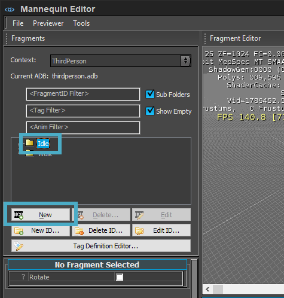
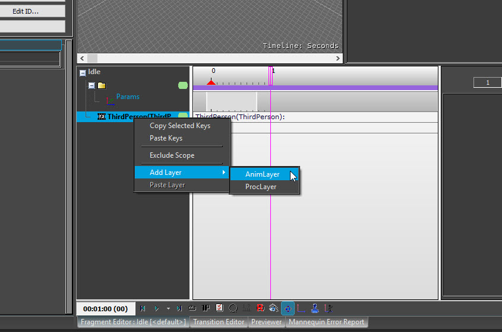
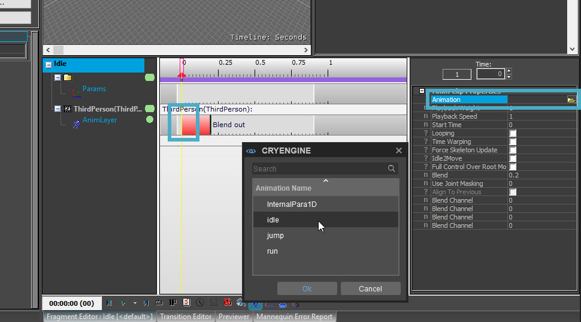
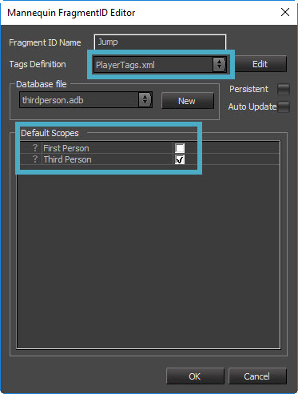
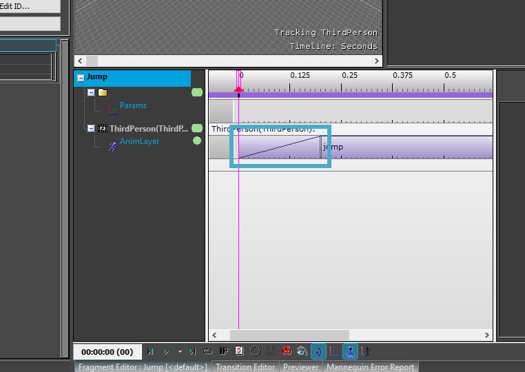
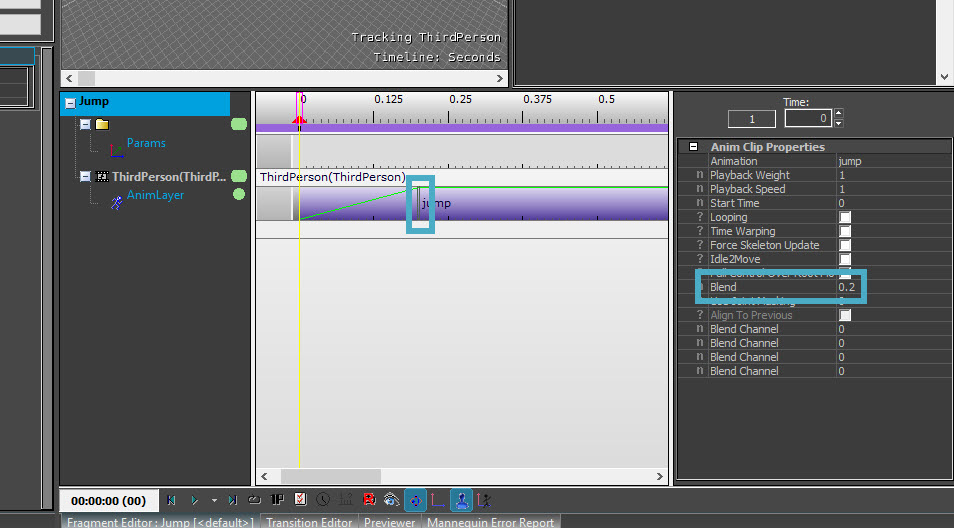
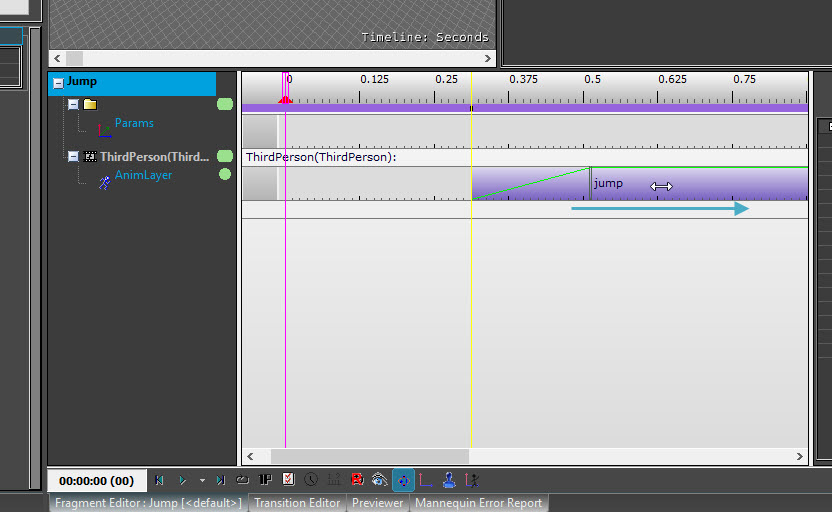
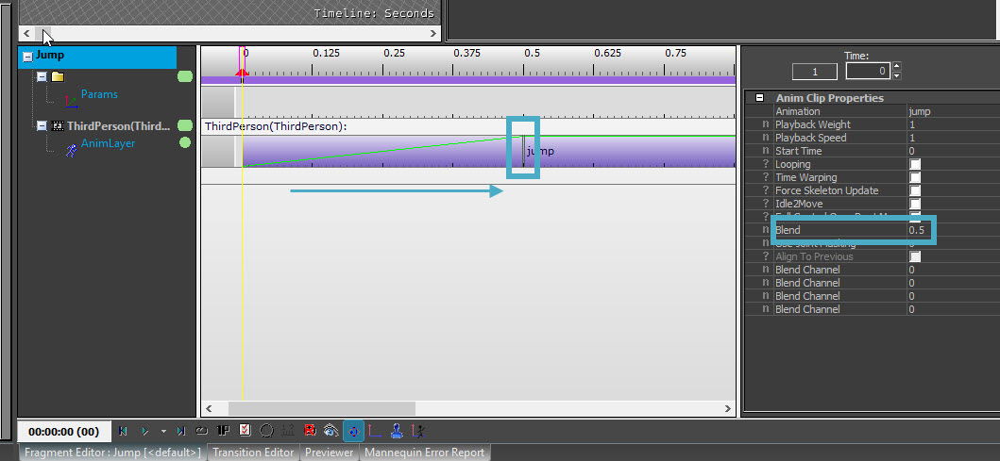
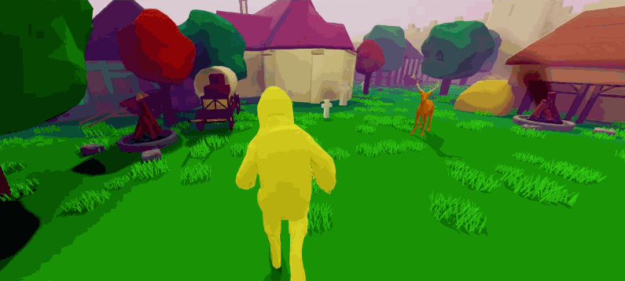

Обзор
Это руководство призвано объяснить процесс обозначение персонажа игрока и настройка нескольких анимаций: бездействие, ходьба – или, как в этом уроке, бег – поворот влево и вправо и прыжки.
Редактор Mannequin будет использоваться для зацикливания и точной настройки переходов между различными анимациями.
В этом уроке будет создана игра от третьего лица, но те же методы можно применить и к дизайну игры от первого лица.
Этот урок следует за предыдущим уроком, Урок - Замена персонажа игрока. Инструкции о том, как импортировать персонажа и сделать его персонажем игрока, прочтите в этом руководстве.
Если вы предпочитаете посмотреть видеоурок, а не читать письменный, ознакомьтесь с видеоурок внизу этой страницы.
Обратите внимание, что GameSDK — это NOT, используемый в этом уроке. Он основан на шаблонах, поставляемых с движком, поэтому создать новый проект используя Шутер от третьего (или первого) лица С++ template.
Невозможно продолжить предыдущий урок, так как он был сделан в изометрии template.
Используемые инструменты
- Mannequin Редактор
- Microsoft Visual Studio® (бесплатная Версия сообщества доступен)
- Любой XML-редактор, например Notepad++.
Файлы
Загрузите следующий файл и распакуйте его в папку проекта:
Чтобы увидеть, где находится папка проекта, наведите указатель мыши на проект в панели запуска и нажмите кнопку винтик значок и выбери Показать в проводнике.
Конечно, можно использовать и любого самодельного персонажа с анимацией.
Если файл определения символов (.cdf) уже был создан в другом проекте, его можно скопировать в папку внутри активы\объекты\персонажи папка. В противном случае выполните действия, описанные в предыдущем учебник при импорте персонажа и анимации сначала с помощью Character Tool.
Генерация и открытие решения
Как в предыдущий урок, прежде чем можно будет изменить код, необходимо создать решение C++. Конечно, если следовать непосредственно предыдущему уроку, в этом нет необходимости, поскольку long использовалось template от первого или третьего лица.
- Щелкните правой кнопкой мыши файл .cryproject и выберите Создать решение.
- Закончив, откройте решения\game.sln файл в Visual Studio.
Через Visual Studio
После открытия Visual Studio необходимо отредактировать два файла: player.h и player.cpp.
Player.h
- В Visual Studio откройте Проект папку, затем Компоненты и player.h.
В строках 32–35 хранятся флаги для движений влево, вправо, вперед и назад. нанесен на карту в другом месте клавишам W, A, S и D на PC. Поскольку будет добавлена новая анимация прыжка, нам также нужен флаг, чтобы зафиксировать действие прыжка:
MoveLeft = 1 << 0, MoveRight = 1 << 1, MoveForward = 1 << 2, MoveBack = 1 << 3, Jump = 1 << 4Не забудьте добавить запятая в конце строки 35, чтобы указать, что этот блок кода продолжается на следующей строке, и не ставьте запятую в конце нашей новой строки.
FragmentID для анимации прыжка необходимо добавить в строку, которая сейчас является строкой. 129:
FragmentID m_jumpFragmentId;Префикс m_ используется сотрудниками Crytek для легко различать переменные-члены и переменные, не являющиеся членами.
Вот и все, что касается player.h. файл.
Player.cpp
Теперь откройте player.cpp файл.
Убедитесь, что строка 24 указывает на файл .cdf, созданный для персонажа игрока. В этом случае:
m_pAnimationComponent->SetCharacterFile("Objects/Characters/hazmat/hamza_final.cdf");В строке 41 получите значение фрагмента перехода из компонента анимации и присвойте его только что созданному элементу:
// Acquire fragment and tag identifiers to avoid doing so each update m_idleFragmentId = m_pAnimationComponent->GetFragmentId("Idle"); m_walkFragmentId = m_pAnimationComponent->GetFragmentId("Walk"); m_rotateTagId = m_pAnimationComponent->GetTagId("Rotate"); m_jumpFragmentId = m_pAnimationComponent->GetFragmentId("Jump");Помните, что имя анимации (в данном случае «прыжок») должно совпадать с именем, которое вы назвали своей анимацией при создании файла определения персонажа.
Лучше всего рассматривать весь код с учетом регистра, поскольку Windows — единственная платформа, которая игнорирует регистр. Если случаи не совпадают, будет отображено сообщение о том, что что-то «невозможно найти». Если это так (без каламбура), проверьте регистры в путях к файлам.
Свяжите Пробел key на платформе PC для нашей анимации прыжка, начиная со строки 66:
m_pInputComponent->RegisterAction("player", "jump", [this](int activationMode, float value) { HandleInputFlagChange((TInputFlags)EInputFlag::Jump, activationMode); }); m_pInputComponent->BindAction("player", "jump", eAID_KeyboardMouse, EKeyId::eKI_Space)Определите физическую силу для прыжка в строке 154:
const float jumpSpeed = 5.f;Эта скорость измеряется в м/с. Это нужно будет протестировать в вашей игре и настроить на желаемое значение; это значение является лишь отправной точкой.
Сообщите движку, в каком направлении персонаж должен прыгнуть (это Z для оси Z, т. е. вверх):
if ((m_inputFlags & (TInputFlags)EInputFlag::Jump) && m_pCharacterController->IsOnGround()) { velocity.z += jumpSpeed; }Немного чтения кода && m_pCharacterController->IsOnGround()) проверяет, находится ли персонаж игрока на земле.
Убедитесь, что скорость положительна, иначе персонаж «прыгнет вниз» по местности.
Наконец, необходимо заменить код в строке 230, чтобы вызвать правильную анимацию в зависимости от текущего статуса игрока. Например, если игрок нажимает клавишу прыжка, он должен прыгать только в том случае, если он в данный момент находится на земле, но не в том случае, если он уже находится в воздухе.
Старая строка 230:
const auto& desiredFragmentId = m_pCharacterController->IsWalking() ? m_walkFragmentId : m_idleFragmentId;Если игрок находится на земле, он должен стоять на месте или идти. Начиная со строки 230, теперь должно быть написано:
FragmentID desiredFragmentId; if (!m_pCharacterController->IsOnGround()) // check if player is on the ground before jumping { desiredFragmentId = m_jumpFragmentId; } else { if (m_pCharacterController->IsWalking()) // { desiredFragmentId = m_walkFragmentId; } else { desiredFragmentId = m_idleFragmentId; } } if (m_activeFragmentId != desiredFragmentId) { m_activeFragmentId = desiredFragmentId; m_pAnimationComponent->QueueFragmentWithId(m_activeFragmentId); }Скомпилируйте проект (Сборка -> Создать проект) и выйдите из Visual Studio, предполагая, что ошибок не возникло.
Если Редактор запускается непосредственно из Visual Studio, установочный файл Mannequin загрузить невозможно.
Через Mannequin
Следующие шаги необходимо выполнить в Mannequin, включая редактирование файлов .xml, а также настройку в редакторе Mannequin.
Указывая Mannequin на персонажа от третьего лица
- Раскрыть проект из Лаунчера и откройте Активы\Анимации\Mannequin\Предварительный просмотр\Player.xml в любом текстовом редакторе.
Это руководство ориентировано только на проект от третьего лица, поэтому удалите ссылки на вид от первого лица в player.xml и обновите местоположение персонажа игрока. Файл player.xml должен выглядеть примерно так:
<MannequinPreview> <controllerDef filename="Animations/Mannequin/ADB/FirstPersonControllerDefinition.xml"/> <contexts> <contextData name="ThirdPerson" enabled="1" database="animations/mannequin/adb/thirdperson.adb" context="ThirdPersonCharacter" model="objects/characters/hazmat/hamza_final.cdf"/> </contexts> <History StartTime="0" EndTime="0"/> </MannequinPreview>Ключевым моментом здесь является указание контекста от третьего лица на точную путь и имя файла определения персонажа игрока это уже было создано. Рекомендуется скопировать и вставить этот путь и имя файла из проводника, чтобы избежать опечаток.
До CRYENGINE 5.5.2 пути и имена файлов нужно сохранить все строчные буквы или Mannequin скажет, что не может найти файл .cdf, даже если он там есть.
Некоторые читатели, возможно, заметили, что FirstPersonControllerDefinition.XML файл не был переименован. Хотя, учитывая, что это игра от третьего лица, разумнее было бы назвать ее «ThirdPersonControllerDefinition.xml», но если имя будет изменено, все ссылки на нее в коде C++ компонента игрока также придется изменить, поэтому проще оставить все как есть.
Сохранить и закрыть этот файл.
В редакторе Mannequin
В редакторе Mannequin анимации будут назначены fragmentIDs, чтобы они воспроизводились на модели персонажа, когда он стоит, ходит или прыгает. Также
- Открыть проект в Sandbox. Открывать уровень пока не обязательно.
- Откройте Mannequin Редактор инструмент (Инструменты -> Анимация -> Редактор Mannequin).
- В меню редактора Mannequin выберите Файл -> Загрузить настройки предварительного просмотра и откройте player.xml файл из Активы\Анимации\Mannequin\Предварительный просмотр папка.
В нижней части Фрагменты Панель в левом верхнем углу содержит кнопки для создания, изменения и удаления всего, что управляет анимацией. В коде определены два идентификатора фрагмента: простой и прогулка. Третий прыжок был добавлен в код, но он еще не был добавлен в редакторе Mannequin, и с идентификаторами фрагментов еще не связана анимация.
Выберите Простой фрагмент ID и нажмите на Новый Кнопка для создания нового фрагмента. Фрагмент будет называться Вариант 1 и будет помещен в желтую папку с именем <default>:

Создание нового FragmentID<Default> относится к контексту — условиям, в которых мы даже рассматриваем возможность воспроизведения этих анимаций. Это называется теги. Эти контекстные теги пока не будут обсуждаться в этом уроке, поэтому пока о них не беспокойтесь. А пока просто используйте по умолчанию тег.
- Двойной щелчок на новом Вариант 1 фрагмент. Убедитесь, что Редактор фрагментов активируется при нажатии на соответствующую вкладку внизу редактора Mannequin. Щелкните правой кнопкой мыши на ThirdPerson фрагмент рядом с временной шкалой и выберите Добавить слой -> AnimLayer:

Добавление слоя анимации Двойной щелчок на первом кадре временной шкалы ThirdPerson, чтобы создать новый анимационный клип. Его свойства отображаются справа как Свойства анимационного клипа. Щелкните поле значения рядом с пунктом «Анимация» и перейдите к Простой анимация, которую вы импортировали с помощью Character Tool:

Включить зацикливание чтобы убедиться, что, когда вы стоите на месте, анимация простоя будет повторяться.
Убедитесь, что анимационный клип начинается с кадра 0. Если из-за неправильного щелчка анимация начинается где-то в другом месте на временной шкале, перетащите анимацию, чтобы она началась с кадра. 0.
Фиолетовый анимационный клип — это настоящий файл .caf, созданный при импорте анимации в Character Tool. Эти анимационные клипы расположены в папке анимации внутри папки, в которую был скопирован персонаж в начале этого урока.
Это хорошая идея предварительный просмотр как выглядит анимация. На элементы управления воспроизведением Внизу экрана есть кнопка повтора. Это просто влияет на предварительный просмотр, а не на что-либо в игре.
Если предварительный просмотр анимации паузы в конце создаем икота в цикле это не имеет никакого отношения к анимационному клипу; он появится только на панели предварительного просмотра в редакторе Mannequin. Однако может быть предпочтительнее видеть плавный цикл анимации. Для этого просто щелкните правой кнопкой мыши чуть выше конца анимационного клипа на график времени над слоями анимации. Появится маленький красный треугольник, который будет отмечать место окончания предварительного просмотра. Опять же, ничто из этого не влияет на то, что происходит в игре; все это определяется свойствами анимационного клипа и местом размещения клипа на временной шкале.
Выполните те же действия, чтобы настроить Прогулка (выберите для этого анимацию «Бег») и Прыжок анимации. Переход не является частью кода по умолчанию, поэтому создайте совершенно новый FragmentID. Скажите ему, чтобы он сохранил мои определения тегов в файле PlayerTags.xml и пока ограничил его область действия третьим лицом:

Новый прыжок FragmentIDЕсли это была анимация, которая хорошо работала для вида от первого лица и ее также необходимо поддерживать, оставьте эту область действия отмеченной.
Смешать переходы
Mannequin предоставляет нечто, называемое Смешать пространство для интерполяции между анимацией параметры (таким образом, «параметрический»), что выходит за рамки данного руководства. Наклонная линия в начале этого анимационного клипа называется переходом смешивания, который интерполирует между анимациями. время.
На данный момент обсуждается единственный переход — это более простая версия, называемая Смешать переход. Это представлено этим наклонная линия в начале или конце анимационного клипа:

Смешать переход
Переход перехода — это период времени, в течение которого система анимации перемещает скелет между текущей анимацией и этой по запросу. Вы можете перетащить это вертикальная полоса double чтобы изменить его длину или отредактировать его в Смесь в свойствах анимационного клипа: 
Настройка перехода смешивания
Значение по умолчанию: 0,2 секунды.
Чтобы увидеть, как это работает, необходимо настроить более одной анимации.
Теперь, когда все анимации настроены, перейдите в Файл -> Сохранить изменения.
Чтобы увидеть это в действии, создайте или откройте уровень и войдите в игровой режим (Ctrl + Г).
Анимация ожидания будет воспроизведена сразу, поскольку персонаж еще не движется ни в каком направлении. Используйте W, A, S или D клавиша для запуска фрагмента ходьбы (или бега в данном случае) и Пробел прыгать в воздух. Сила, которая была приложена в C++ к оси Z, явно слишком велика для человека в условиях земной гравитации, поэтому вернитесь, уменьшите это значение и проверьте, пока оно не будет выглядеть так, как хотелось бы.
Два примера того, как можно настроить анимацию в редакторе Mannequin:
- Пресса Побег чтобы выйти из игрового режима, откройте фрагмент Jump и просто перетащите анимацию, чтобы она не начиналась с кадра 0:

Задержка анимации прыжка
Вернитесь в игру с Ctrl + Ги обратите внимание, что при нажатии кнопки Пробел чтобы прыгнуть, физическая сила толкает игрока вверх, но анимация прыжка не начинает воспроизводиться сразу, потому что она была с задержкой. - Перетащите анимацию обратно, чтобы начать с кадра. 0, но увеличьте переход перехода в начале анимации прыжка до 0.5 секунды:

Войдите в игру, и во время прыжка тело будет поворачиваться из положения холостого хода в положение прыжка в течение этих полсекунды.
На этом завершается введение в настройку новой анимации FragmentID и базовое использование Mannequin.
В сочетании с ресурсами из предыдущего урока уровень теперь может выглядеть примерно так:

В следующем уроке будет добавлено больше анимаций и будут использоваться теги для создания контекстов для выбора анимации на основе состояния игры и текущего положения персонажа.
Пример уровня
Пример уровня можно найти в базе данных активов, который объединяет результаты предыдущего руководства и этого руководства. Вы можете найти его на База данных активов.
В этом примере уровня можно переключаться между оленем и опасным персонажем, нажав Ф1.
Видеоурок
Чтобы просмотреть это руководство в видеоформате и получить дополнительную информацию, посмотрите видео ниже. Охваченные темы:
- 0:00 Введение
- 0:50 Определение системы Mannequin
- 1:45 Знакомство с условиями Mannequin через готовую настройку игрока Mannequin
- 4:30 Создание нового проекта и создание решения на C++.
- 5:45 Настройка фрагмента анимации прыжка в player.h
- 7:30 Настройка фрагмента анимации прыжка в player.cpp
- 15:40 Изменение области действия в player.xml пользователя Mannequin
- 17:30 Использование редактора Mannequin для определения фрагмента перехода ID
- 18:55 Добавление фрагментов анимации и тегов в редакторе Mannequin
- 19:30 Добавление слоя анимации в редакторе Mannequin
- 20:50 Предварительный просмотр временной шкалы анимации в редакторе Mannequin
- 21:15 Настройка переходов смешивания в редакторе Mannequin
- 24:00 Просмотр и редактирование файлов XML пользователя Mannequin напрямую
- 25:10 Тестирование анимации на уровне
- 26:00 Экспериментируем с настройками слоя анимации.